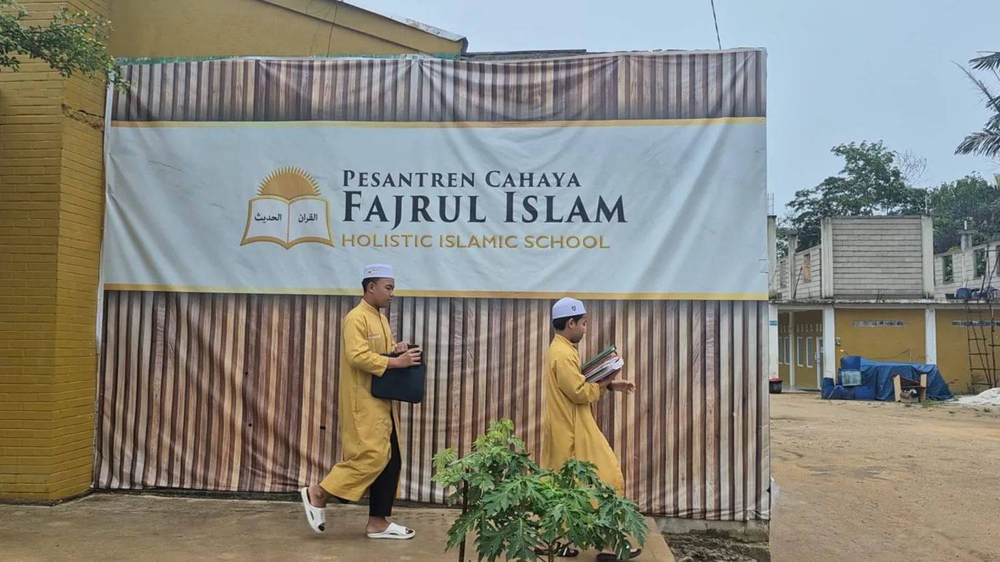
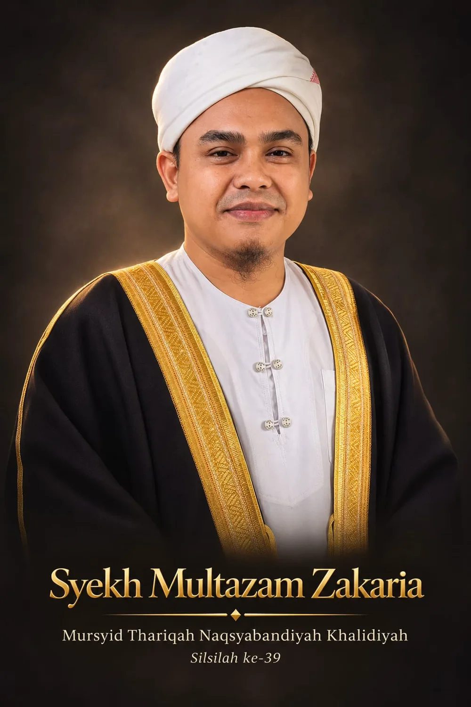

Al-Qur’an
Tahfiz Al-Qur’an
Menguatkan kedekatan dengan Al-Qur’an melalui pendidikan tahfiz.
Penerimaan santri baru · Pesantren Cahaya
Dekat dengan Allah, luas dalam ilmu, dan kuat dalam karakter. Tempat ananda belajar mengenal diri dan menyiapkan langkahnya di masa depan.

Selamat datang di Cahaya
Pesantren Cahaya Fajrul Islam hadir di Kabupaten Belitung untuk mendampingi tumbuhnya pribadi yang mencintai Allah, berakhlak mulia, berhati bersih, berakal cerdas, serta memiliki tubuh yang sehat dan berdaya.
Ilmu, karakter, dan kehidupan sehari-hari berjalan bersama. Inilah arah pendidikan yang kami sebut karakter CAHAYA.

Pengasuh
Akrab disapa “Abah Multazam”
Pesantren Cahaya Fajrul Islam diasuh langsung oleh Syekh Multazam Zakaria. Beliau memperoleh gelar Syekh dan izin sebagai Syekh Mursyid silsilah ke-39 setelah menamatkan pendidikan ruhani dalam Thariqah Naqsyabandiyah Khalidiyah di bawah bimbingan Syekh Zainal Abidin. Rangkaian silsilah kemursyidan beliau berlanjut dari Syekh Zainal Abidin kepada Syekh Karminanto, Buya Dr. Syekh Musytari, hingga Prof. Dr. Syekh Jalaluddin (PPTI 1920), yang silsilah kemursyidannya berasal dari jalur Abi Jabal Qubais, Mekah.
Menempuh pendidikan di pesantren bercorak tradisional, modern, dan tahfiz, serta pendidikan tinggi dari sarjana hingga doktoral (S3) dalam bidang Manajemen Bisnis Syariah, Manajemen Pendidikan, dan Pendidikan Agama Islam.
Pendidikan talaqqi ditempuh hingga memperoleh sanad Al-Qur’an, hadits, dan ilmu keislaman lainnya. Beliau juga memiliki sertifikat kompetensi dalam neurosains, parenting, transforming behavior, dan pengelolaan lembaga wakaf.
Pokok pemikirannya hadir dalam sejumlah buku:
Sebaran alumni
Perjalanan belajar terus berlanjut. Alumni Pesantren Cahaya Fajrul Islam tersebar di perguruan tinggi dan lembaga pendidikan di Indonesia maupun luar negeri.
Dan berbagai lembaga pendidikan lainnya.
Kurikulum keilmuan
Tahfiz Al-Qur’an, kitab kuning, dan kurikulum nasional dipelajari beriringan. Bekal untuk menjalani kehidupan dan melanjutkan pendidikan di dalam maupun luar negeri.
Menguatkan kedekatan dengan Al-Qur’an melalui pendidikan tahfiz.
Mendalami khazanah keilmuan Islam sebagai fondasi pemahaman agama.
Mengembangkan keilmuan untuk melanjutkan pendidikan dan menghadapi kehidupan.
Program penanaman karakter
Lima dimensi karakter CAHAYA menjadi arah tumbuh santri, ditanamkan melalui pendampingan dan kebiasaan sehari-hari.
Lima dimensi karakter CAHAYA
Bekal yang tumbuh bersama anandaSpiritual
Relasional
Emosional
Intelektual
Fisik
Pendekatan & program
Karakter ditanamkan melalui hubungan yang hangat, pendampingan personal, dan kebiasaan baik yang dilatih terus-menerus.

Ada ruang untuk bercerita, mengevaluasi diri, dan mencoba menjadi lebih baik.
Setiap pekan, santri bertemu secara personal dengan mentornya untuk melakukan self asesmen karakter CAHAYA, mengapresiasi capaian, mengevaluasi kendala, serta menyusun target dan strategi perbaikan.
Hasil dan riwayat mentoring dapat dibagikan kepada wali santri melalui CAHAYA App.
Kelompok persaudaraan dan pembinaan untuk belajar hidup bersosial, bekerja sama, memimpin, dan membangun persahabatan.
Penanganan pelanggaran berdasarkan data dan bukti yang akurat melalui proses konseling terstandar. Tujuannya adalah tumbuhnya kesadaran, perbaikan, dan pertumbuhan berkelanjutan.
Program dan tim pendamping terjadwal serta terstruktur sepanjang hari. Pengulangan kebiasaan baik menjadi jalan untuk membangun kedisiplinan.
Apresiasi rutin
Pesantren secara rutin memberikan penghargaan kepada santri yang berprestasi, baik dalam keilmuan maupun karakter. Setiap apresiasi menjadi penguat untuk terus bertumbuh dalam kebaikan.
Rihlah dan pembelajaran luar pesantren
Ruang untuk menyegarkan jiwa di tengah padatnya kegiatan pesantren, sekaligus memperluas pengalaman belajar.
Kunjungan rutin
Kunjungan bulanan dirancang sebagai waktu untuk terhubung kembali. Menyamakan langkah orang tua, anak, dan pesantren agar karakter baik terus tumbuh, termasuk saat ananda berada di rumah.
Terhubung lewat CAHAYA AppTasmi’ Al-Qur’an bersama orang tua.
Santri membagikan ilmu baru; orang tua berperan sebagai murid.
Makan bersama, dzikir, dan pengajian dalam suasana kasih sayang.
Program minat bakat
Ruang untuk menjelajah minat, mengasah kemampuan, dan belajar bersama teman.
Digitalisasi
CAHAYA App menghubungkan pesantren dan wali santri, termasuk untuk berbagi hasil serta riwayat mentoring. Informasi lengkap tentang ekosistem digital akan ditambahkan.
Jenjang pendidikan
Informasi lebih lanjut mengenai masing-masing jenjang akan dilengkapi.
Langkah berikutnya
Kenali alurnya, buat akun calon wali, lalu lengkapi data secara bertahap melalui portal PSB.
Daftar menggunakan email dan nomor handphone.
Lengkapi pendaftaran serta asesmen calon wali dan santri.
Pantau pengumuman jadwal melalui akun calon wali.
Hasil dapat dilihat di akun setelah diumumkan pengurus.
Informasi PSB sedang dilengkapi.
Jadwal, biaya, dan persyaratan resmi akan diumumkan kemudian. Formulir dan asesmen di portal masih berupa contoh.
Silakan masuk ke portal PSB untuk melanjutkan pengisian data serta memantau jadwal dan hasil tes.
Informasi resmi sedang disiapkan dan akan ditambahkan ke halaman ini. Pengumuman jadwal tes juga dapat dipantau melalui akun calon wali.